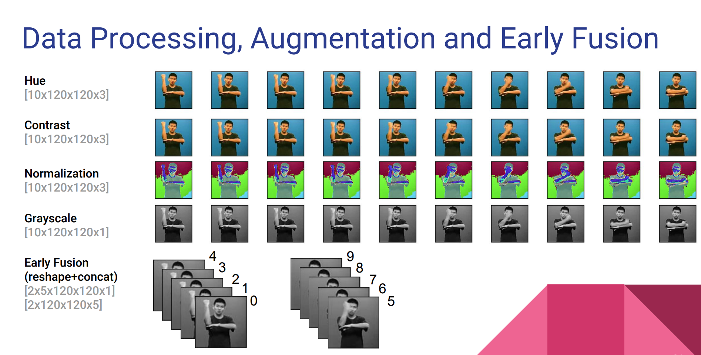
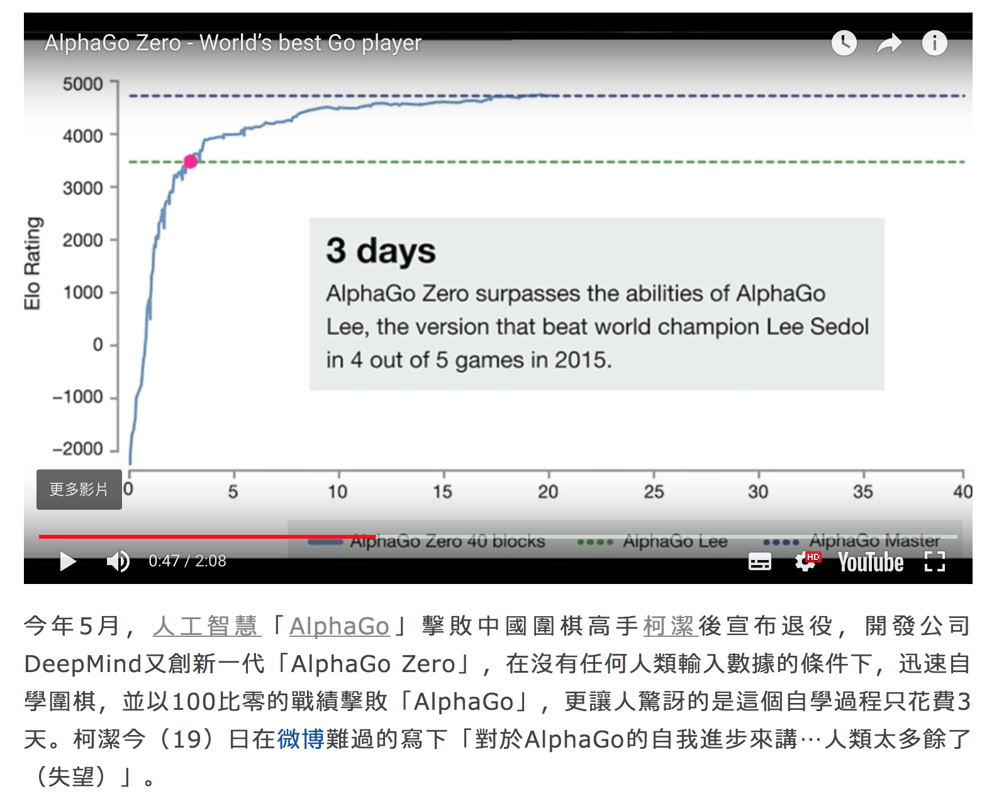
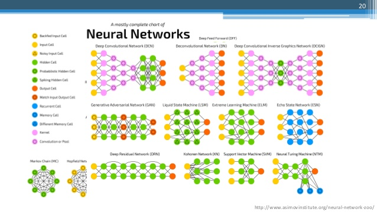
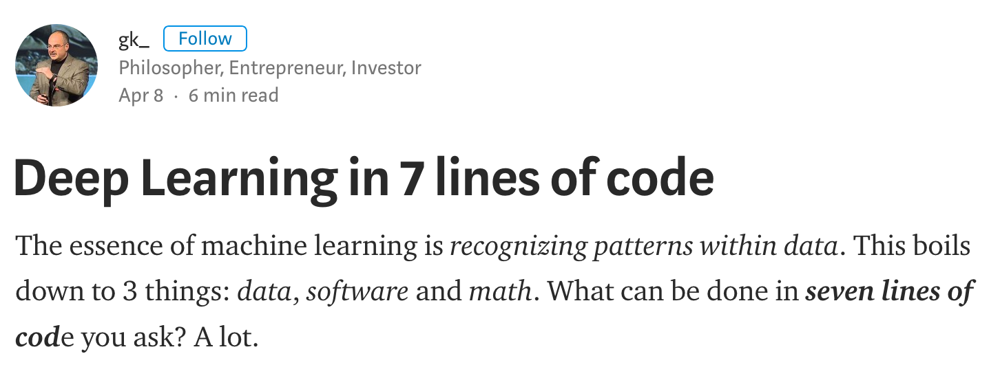

AI: Semantics Network Batteries-included


繼
語音之後，語意（理解）是關鍵。

Real Time American Sign Language Video Captioning using
Deep Neural Networks



YOU: My _1_ is _2_
ELIZA: How long has your _1_ been _2_ ?
YOU: _1_ 覺得我很 _2_
CELIZA: 那妳覺得妳很 _2_ 嗎？
But, which Semantics?
Chinese Wordnet)
DeepMind 的 leader 要跟神經科學學習 / Hinton 認為 back-propagation 要打掉重練
Word Embeddings
人格面具,自我實現、善心、惻隱之心、同情心、助人、愛心、民主、創造、 幽默、風趣、詼諧、恐懼、自卑、氣質、非理性決策（直覺
下面這句話一秒鐘看完並說出意思
[賣女孩的小火柴][請上獎領台]
[1] Huth AG, de Heer WA, Griffiths TL, Theunissen FE, & Gallant JL (2016). Natural speech reveals the semantic maps that tile human cerebral cortex. Nature, 532 (7600), 453-8 PMID: 27121839